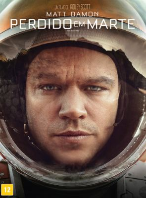

Calendário de Dias
Setembro / Outubro 2023
Dom
Seg
Ter
Qua
Qui
Sex
Sáb
03/09
04/09
05/09
06/09
07/09
 Dias com Ela (2009)")
08/09
")
09/09
")
10/09
11/09
")
12/09
13/09
14/09
")
15/09
")
16/09
")
17/09
18/09
")
19/09
")
20/09
")
21/09
22/09
23/09
")
24/09
")
25/09
")
26/09

27/09
")
28/09
")
29/09

30/09
")
01/10
")
02/10